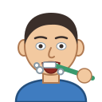

Unit 15
日常Daily Routine
起身, 返工, 食飯, 瞓覺: your day, what you're doing now with 緊 (我食緊飯), and what you've ever done with 過 (你去過香港未呀？).
Learn
A day
Getting up, work and school, meals and bed; the time, 先 and 然後, 緊 for now, 咗 and 未, and 過 for ever.
GameDay Planner
Hear when they get up, put the day in order, read the planner for what's 緊, 咗 or 未, and answer 去過未？

GameTone Detective
Hear a word of the day and pick its tones. 返 or 飯?
SpeakingSay It Back
Record yourself and compare your tones with a native speaker's pitch curve.